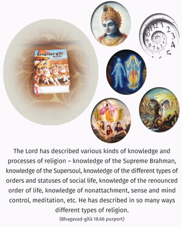

Abandon all varieties of religion and just surrender unto Me. I shall deliver you from all sinful reactions. Do not fear.

The Lord has described various kinds of knowledge and processes of religion – knowledge of the Supreme Brahman, knowledge of the Supersoul, knowledge of the different types of orders and statuses of social life, knowledge of the renounced order of life, knowledge of nonattachment, sense and mind control, meditation, etc. He has described in so many ways different types of religion. Now, in summarizing Bhagavad-gītā, the Lord says that Arjuna should give up all the processes that have been explained to him; he should simply surrender to Kṛṣṇa. That surrender will save him from all kinds of sinful reactions, for the Lord personally promises to protect him.
In the Seventh Chapter it was said that only one who has become free from all sinful reactions can take to the worship of Lord Kṛṣṇa. Thus one may think that unless he is free from all sinful reactions he cannot take to the surrendering process. To such doubts it is here said that even if one is not free from all sinful reactions, simply by the process of surrendering to Śrī Kṛṣṇa he is automatically freed. There is no need of strenuous effort to free oneself from sinful reactions. One should unhesitatingly accept Kṛṣṇa as the supreme savior of all living entities. With faith and love, one should surrender unto Him.
The process of surrender to Kṛṣṇa is described in the Hari-bhakti-vilāsa (11.676):
ānukūlyasya saṅkalpaḥ
prātikūlyasya varjanam
rakṣiṣyatīti viśvāso
goptṛtve varaṇaṁ tathā
ātma-nikṣepa-kārpaṇye
ṣaḍ-vidhā śaraṇāgatiḥ
According to the devotional process, one should simply accept such religious principles that will lead ultimately to the devotional service of the Lord. One may perform a particular occupational duty according to his position in the social order, but if by executing his duty one does not come to the point of Kṛṣṇa consciousness, all his activities are in vain. Anything that does not lead to the perfectional stage of Kṛṣṇa consciousness should be avoided. One should be confident that in all circumstances Kṛṣṇa will protect him from all difficulties. There is no need of thinking how one should keep the body and soul together. Kṛṣṇa will see to that. One should always think himself helpless and should consider Kṛṣṇa the only basis for his progress in life. As soon as one seriously engages himself in devotional service to the Lord in full Kṛṣṇa consciousness, at once he becomes freed from all contamination of material nature. There are different processes of religion and purificatory processes by cultivation of knowledge, meditation in the mystic yoga system, etc., but one who surrenders unto Kṛṣṇa does not have to execute so many methods. That simple surrender unto Kṛṣṇa will save him from unnecessarily wasting time. One can thus make all progress at once and be freed from all sinful reactions.
One should be attracted by the beautiful vision of Kṛṣṇa. His name is Kṛṣṇa because He is all-attractive. One who becomes attracted by the beautiful, all-powerful, omnipotent vision of Kṛṣṇa is fortunate. There are different kinds of transcendentalists – some of them are attached to the impersonal Brahman vision, some of them are attracted by the Supersoul feature, etc., but one who is attracted to the personal feature of the Supreme Personality of Godhead, and, above all, one who is attracted by the Supreme Personality of Godhead as Kṛṣṇa Himself, is the most perfect transcendentalist. In other words, devotional service to Kṛṣṇa, in full consciousness, is the most confidential part of knowledge, and this is the essence of the whole Bhagavad-gītā. Karma-yogīs, empiric philosophers, mystics and devotees are all called transcendentalists, but one who is a pure devotee is the best of all. The particular words used here, mā śucaḥ, “Don’t fear, don’t hesitate, don’t worry,” are very significant. One may be perplexed as to how one can give up all kinds of religious forms and simply surrender unto Kṛṣṇa, but such worry is useless.